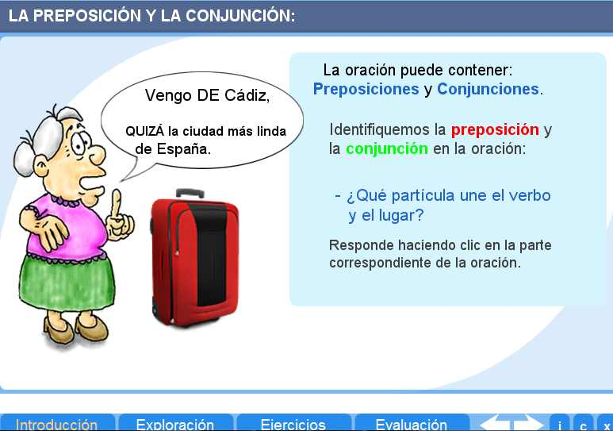
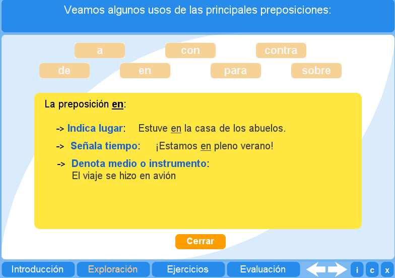
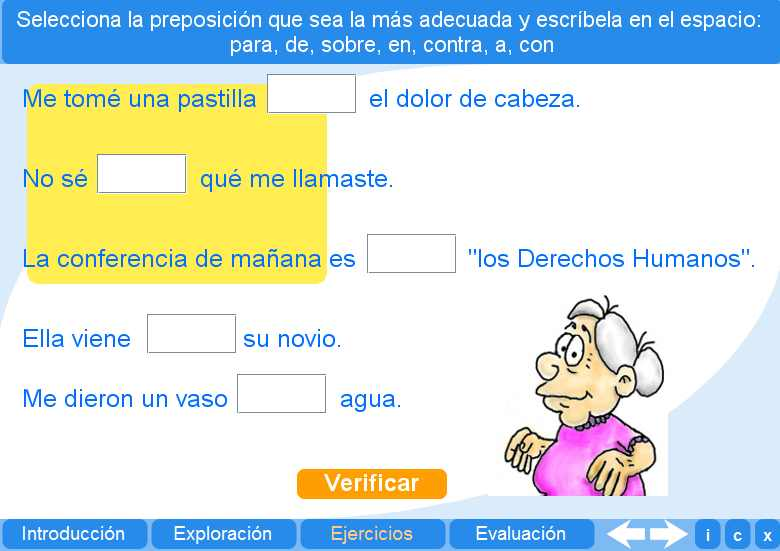
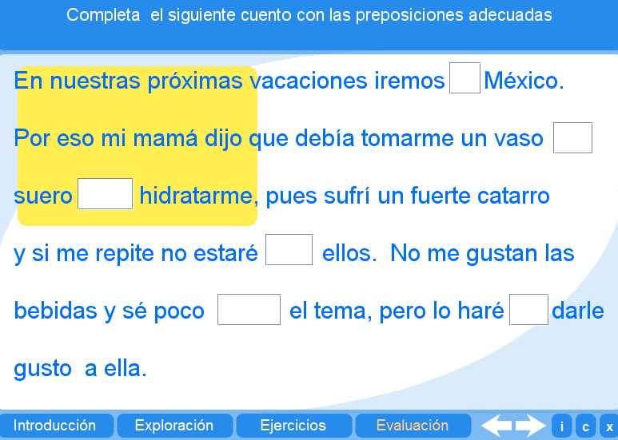

Objetivo
Ofrecer actividades que inviten al alumno a repasar y practicar las preposiciones y las conjunciones.
Instrucciones generales
Se puede navegar entre los apartados con el menú de la parte inferior. Este menú aparece a lo largo de todo el interactivo y conserva su funcionalidad.
También se puede navegar por las escenas por medio de las flechas de navegación que aparecen en el lado inferior derecho del interactivo. Dentro del apartado Evaluación, es necesario utilizar estas flechas para acceder a las escenas sucesivas de dicho apartado.

En la parte inferior derecha del interactivo se encuentran los siguientes botones:
 |
Muestra la documentación del interactivo. |
 |
Despliega los créditos correspondientes a este interactivo. |
 |
Cierra el interactivo. |
Contenidos
Introducción
Ilustra sobre el uso de las preposiciones y las conjunciones.

Exploración
Ofrece al alumno la oportunidad de repasar diferentes tipos de preposiciones.

Ejercicio
El alumno puede ejercitar lo aprendido completando los textos que faltan en las frases señaladas.

Evaluación 1
El alumno debe completar las frases..

Evaluación 2
El alumno debe completar las frases con determinantes exclamativos e interrogativos.

Evaluación 3
El alumno debe clasificar los determinantes dados.

| Los materiales aquí presentados utilizan el applet Descartes Web 2.0. | |
 |
Los contenidos de esta unidad didáctica están bajo una licencia de Creative Commons. |